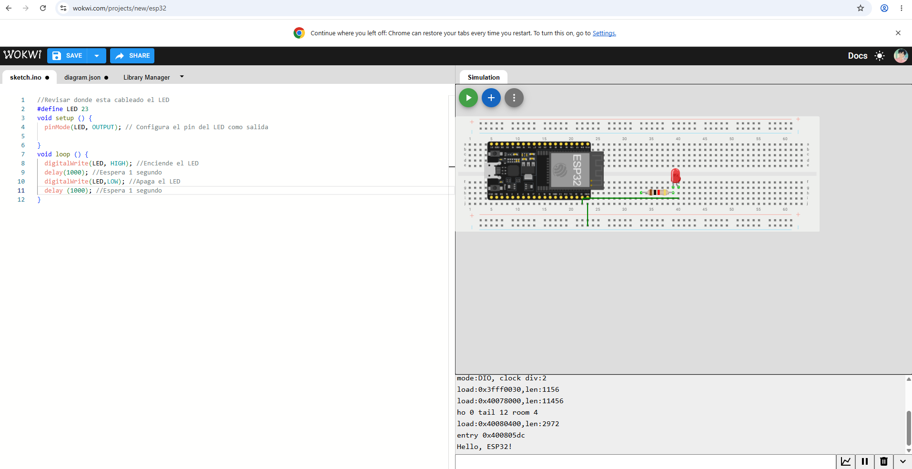
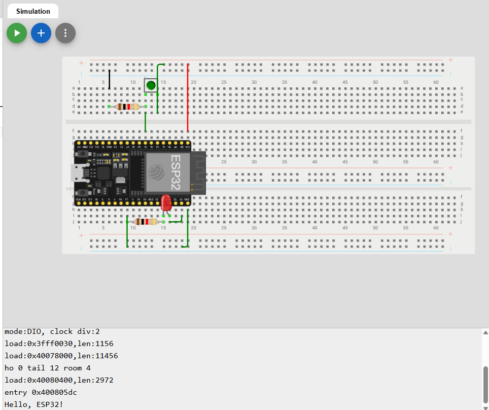
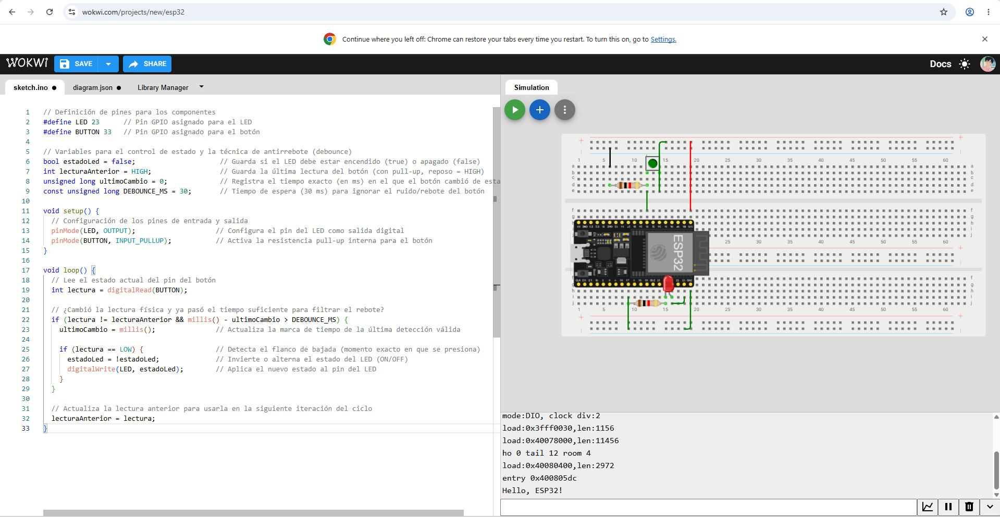

Sesión — Entrada, Salida y Antirrebote con ESP32
Objetivos
- Configurar pines digitales como entrada (con resistencia pull-up/pull-down) y salida en el microcontrolador ESP32.
- Comprender el fenómeno físico del rebote mecánico en un botón o pulsador (bouncing).
- Implementar una rutina de filtrado antirrebote por software para obtener lecturas estables en el sistema.
Materiales
- (1×) Módulo ESP32 (NodeMCU 32S o similar)
- (1×) Pulsador (Botón táctil)
- (1×) Resistencia de 10 kΩ (en caso de no utilizar la resistencia pull-up interna del ESP32)
- (1×) LED indicador
- (1×) Resistencia de 220 Ω (para el LED)
- Protoboard y cables de conexión
Desarrollo
Explicación del fenómeno de rebote: Cuando se presiona un botón mecánico, los contactos metálicos internos chocan y vibran microscópicamente durante unos milisegundos antes de asentarse. Esto provoca que el ESP32 detecte múltiples pulsos falsos (altos y bajos rápidos) en lugar de una sola pulsación limpia. Para solucionar esto, implementamos un control por software basado en tiempo (millis()) que filtra estas fluctuaciones.
Código fuente (Arduino IDE)
const int botonPin = 15; // Pin digital conectado al botón (Entrada)
const int ledPin = 2; // Pin digital conectado al LED (Salida)
// Variables para el control del estado y el antirrebote
int estadoLed = LOW; // Estado actual del LED
int estadoPulsador; // Lectura actual del pin del botón
int ultimoEstadoPulsador = HIGH; // Lectura anterior del botón (asumiendo Pull-Up)
unsigned long ultimoTiempoDebounce = 0; // Último momento en que el botón cambió de estado
unsigned long delayDebounce = 50; // Tiempo de retardo para el antirrebote (en milisegundos)
void setup() {
pinMode(ledPin, OUTPUT);
pinMode(botonPin, INPUT_PULLUP); // Activamos resistencia pull-up interna
digitalWrite(ledPin, estadoLed);
}
void loop() {
int lectura = digitalRead(botonPin);
// Si el estado del botón cambió debido a ruido o presión:
if (lectura != ultimoEstadoPulsador) {
ultimoTiempoDebounce = millis(); // Reiniciamos el temporizador de rebote
}
// Si ha pasado el tiempo suficiente, tomamos la lectura como válida
if ((millis() - ultimoTiempoDebounce) > delayDebounce) {
// Si el estado del botón realmente cambió:
if (lectura != estadoPulsador) {
estadoPulsador = lectura;
// Si el botón está presionado (LOW en INPUT_PULLUP), cambiamos el estado del LED
if (estadoPulsador == LOW) {
estadoLed = !estadoLed;
digitalWrite(ledPin, estadoLed);
}
}
}
ultimoEstadoPulsador = lectura;
}
Imágenes y esquemáticos
1. BLINK

Programa 1: BLINK realizado en Wokwi.
2. BLINK con botón

Programa 2: BLINK con botón realizado en Wokwi
3. TOGGLE con antirrebote

Programa 3: TOGGLE con antirrebote realizado en Wokwi.
Fallas y Soluciones
- Síntoma: Al intentar subir el código a la ESP32, aparecía un error indicando que el puerto estaba ocupado o no existía. El cable USB actuaba simplemente como un cargador, pero no transmitía datos.
- Cómo lo encontré: Revisamos el Administrador de Dispositivos en la computadora dentro de la sección de puertos COM y LPT. Notamos que no detectaba ninguna placa conectada por USB y únicamente aparecían los puertos del Bluetooth.
- Solución: Identificamos el chip de la tarjeta ESP32 el cual es el CP2102 e instalamos su driver correspondiente en la laptop. Tras la instalación, la computadora reconoció el puerto bajo el nombre Silicon Labs CP210x USB to UART Bridge, logrando así que los datos se transmitieran correctamente a la tarjeta.
Aprendizajes
En esta práctica aprendimos la importancia de configurar correctamente los controladores de comunicación entre la computadora y la tarjeta ESP32 antes de intentar subir cualquier código. También comprendimos cómo funciona la lógica de programación para salidas digitales, cómo manejar entradas con el modo INPUT_PULLUP y cómo solucionar los problemas de rebote en botones tanto por hardware como por software.
Siguiente paso
Para las siguientes prácticas buscamos aprender más sobre programación para poder hacer sistemas un poco más complejos, entender bien su funcionamiento y lograr armarlos correctamente antes de ponerlos en práctica.